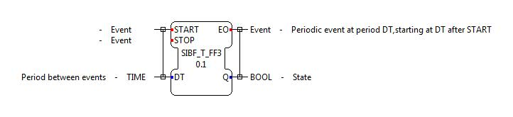

External Events are events in FORTE, which are hidden and can not be seen in 4DIAC. They do not appear as red event lines. They are usually used for Communication between Hardware and Function Blocks. E.g. E_CYCLE is a Function Block that uses this functionality. It registers to the CTimerHandler Class to get External Events in a periodic time.
This is an advanced example showing how to make your own timed T-Flip-Flop Service Interface Function Block. It is based on the E_CYCLE Block and works quite the same way. This tutorial shows you how to build it from scratch. Consider that this is just an example that does not follow the IEC 61499 standard.
T Flip-Flop as SIFB with integrated Timer. Export the interface to FORTE (*.h and *.cpp files) and include them to your build.
This time we want to create a timed SIFB so we do not inherit from CFunctionBlock. Instead we inherit from CEventSourceFB. A CEventSourceFB can react to External Events. Therefore you should correct the first line of your class declaration like this:
In this case we want to get External Events from the included Timer handler. Include the 2 files timerha.h and resource.h and change funcbloc.h to esfb.h. Your include parameters should look like this:
Then we need a new Constuctor as well as two new private members bool m_bActive; which will indicate that the timed Function Block is currently active and STimedFBListEntry m_stTimeListEntry; which represents the Timer list entry of this timed Function Block.
Remove the default constructor FUNCTION_BLOCK_CTOR and replace it with above. This consturctor registers this Function Block as a External Event Listener, that triggers this Function Block if an event occurs. Then the timer list entry is configured.
Then you need to edit the executeEvent method. The usual start and stop Events will register this block to the CTimerHandler. Add a new event cg_nExternalEventID, which is defined in CEventSourceFB, and let it set your outputs. This will be triggered if your Function Block receives an External Event.
Compile FORTE and run it. Test your new Function Block with the tester. If something went wrong, compare your code with the following files.
To send External Events your Class must inherit from CExternalEventHandler. In the Constructor you must register this class:
Then you can send External Events with:
Go back to Development index:
If you want to go back to the Start Here page, we leave you here a fast access
Or Go to top